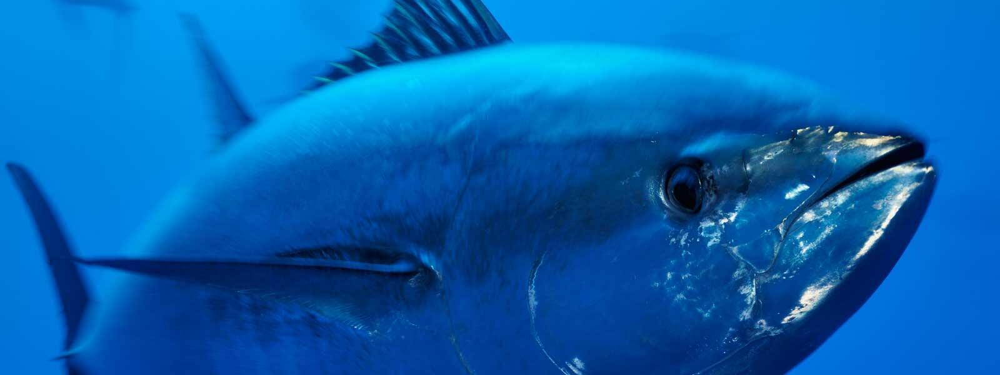

MERCURY FISH
back to home

BLUEFIN TUNA
ABOUT ME
If fish were like cars, tuna would be the Ferraris of the ocean—sleek, powerful, and made for speed. Their
torpedo-shaped bodies streamline their movement through water, and their special swimming muscles enable them to cruise
the ocean highways with great efficiency. Tuna are remarkable and impressive wild animals. The Atlantic bluefin can reach ten feet in length and weigh as much as
2,000 pounds (more than a horse). Their specialized body shape, fins, and scales enable some species of tuna to swim as
fast as 43 miles per hour. Tuna swim incredible distances as they migrate. Some tuna are born in the Gulf of Mexico and travel across the entire
Atlantic Ocean to feed off the coast of Europe, and then swim all the way back to the Gulf to breed.
These extraordinary marine animals are also integral to the diet of millions of people and are one of the most
commercially valuable fish. The majority of the market is made up of four species: skipjack alone accounts for more than
half of the global catch of tuna, followed by yellowfin, bigeye, and albacore. The bluefin tuna, including the
endangered Southern bluefin, and near-threatened Pacific bluefin, only makes up less than 1% of the global catch. As the
methods of catching tuna have advanced over the years, the conservation and management of tuna have not evolved as
quickly. According to the United Nations Food and Agriculture Organization, most tuna stocks are fully exploited
(meaning there is no room for fishery expansion) and some are already overexploited (there is a risk of stock collapse).
According to the International Seafood Sustainability Foundation, 61% of tuna stocks are at a healthy level of
abundance, but 13% are considered overfished.
ENVIRONMENTAL THREATS
Where tuna move, fishers have lined the ocean with giant nets and endless lines of fishing boats. Fishers have resorted
to high-tech ways to catch tuna, including devices that draw the fish into bunches so that fishermen can catch more of
them at once. Many of the world’s valuable tuna species face a number of urgent yet common threats to their continued
existence such as significant population declines, poor international conservation management, and high levels of
illegal, unreported, and unregulated (pirate) fishing. Illegal fishing of Atlantic bluefin tuna is a big problem and the
fishery has been plagued by lack of enforcement. Tuna “ranching” pens that are used to temporarily house and fatten wild
fish can serve as a means to launder illegal fishing.
According to information collected by the International Seafood Sustainability Foundation (ISSF), several tuna stocks
are currently overfished, meaning that adult fish are being caught faster than they can breed and replenish the
population. Pacific bluefin tuna are heavily overfished, and the Atlantic bigeye and the Indian Ocean yellowfin tuna are
experiencing overfishing with increased catch levels in recent years. The skipjack tuna, while quite resilient, could
easily slip into a vulnerable state due to overfishing if improperly managed.
Bigeye tuna are prized in Asia for sashimi as well as frozen and fresh in other markets. As bluefin tuna populations
shrink around the world, pressure on bigeye fisheries is increasing. Bluefin tuna populations have declined severely
from overfishing and illegal fishing over the past few decades – not just Pacific bluefin tuna, but also Atlantic and
Southern bluefin tuna. Population declines have been largely driven by the demand for this fish in high-end sushi
markets, and their futures are uncertain.
ENDANGERMENT RISK: VULNERABLE
SOURCES
𓆟 worldwildlife.org
𓆟 online.law.tulane.edu